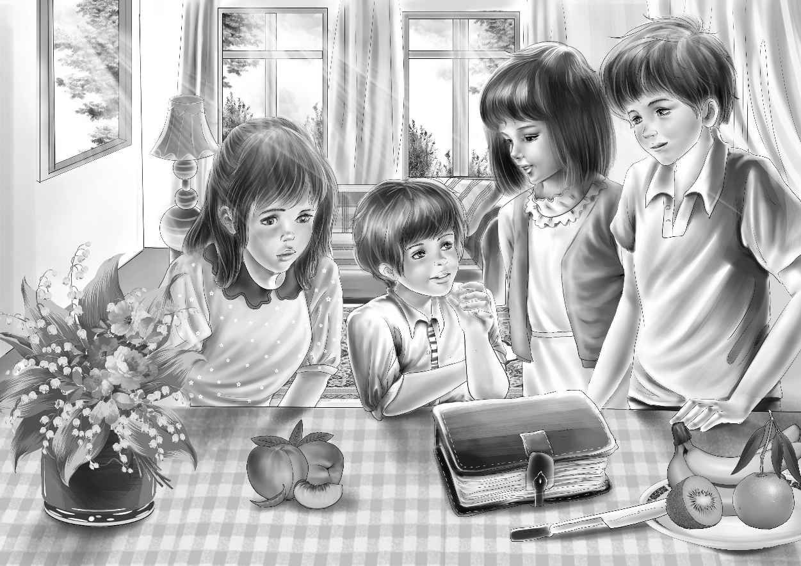

Chapter 7 Clues from an Old Book
回到农场之后，亨利把整件事一五一十地告诉了简姑婆。
“太离谱了！”姑婆说，“不过我不怕，这儿有西姆和山姆呢！你们认为谁会住在我的小木屋里？”
“应该是个理家高手，”杰西说，“那间小屋被收拾得清清爽爽！”
“你们为什么不去问问，科尔先生什么时候回镇上呢？”简姑婆说，“说不定他知道小木屋的事。要是我，我就这么办。”
去科尔爷爷家并不远，亨利和杰西决定立刻动身。
他们到达时，科尔爷爷正坐在院子里看书。
“您知道您的弟弟什么时候能回来吗？”亨利问。
“最早也得到七月一日，”科尔爷爷说，“纽约一热起来，他准会回这里来，他讨厌去别处旅行。”
杰西说：“要是他来了，我们好想见见他！到时候他会住在哪儿？”
“当然是和我一起住在这里。”老先生说，“对我来说，他是个好伴儿，记性又好。”
“那就好！”亨利笑着说，“我们有很多问题要问他呢！”
“可我又怕这样会打扰到他。”杰西说。
“怎么会？他喜欢被打扰，我也是。看到你们这些好心的年轻人，我们不知道有多开心！要经常过来玩儿啊。”
“我们保证一定会的！”和科尔爷爷告辞后，亨利便和杰西一起散步回家了。回到家，他们看见维莉正坐在后门的台阶上，津津有味地读着一本大书。她抬起头，看着哥哥姐姐，脸上带着掩饰不住的兴奋。
“亨利！”维莉说，“我发现了一本妙不可言的书！全是关于独立战争的，里面还提到了约翰·汉考克和山姆·亚当斯 [1] 藏身的事儿。”
兄妹俩赶紧在维莉身边坐下。“快讲给我们听听。”杰西说。
“对，”亨利说，“快讲讲。”
“我是在客厅里发现这本书的，”维莉说，“瞧，图片很多吧？这张就是火枪的图片。”
“和咱们看过的老火枪一模一样呢！”亨利仔细研究着。
“你们再看这儿，”维莉说，“如果约翰·汉考克要藏起来……”
“那他的很多手下也要藏起来！”杰西接着维莉的话说。
“没错！”亨利说，“我知道他的追随者很多，遍布各地。维莉，你发现的线索太重要啦！”
这时，班尼从转角冒了出来，“维莉发现什么了？”
“重大新闻！”亨利说，“班尼，快坐下。维莉在一本很古老的书里发现了木屋谜案的新线索。”
他大致给班尼解释了一下，并配以图片说明。
“太酷了！”班尼叫道，“你们是不是觉得，约翰·汉考克的其中一个手下就藏在我们的小木屋里？”
“哦，那倒不是，”亨利慢慢地说，“他们藏身的地方决不会是同一座小木屋。老的木屋早在一百年前就倒塌了，目前的这座年代没那么久远。”

“一百年前？”班尼惊讶地问，“那么，老木屋是什么时候建的？”
“多半是殖民地时代。”亨利说，“维莉，书里还讲了些什么？”
“书上说，约翰·汉考克的手下尽可能地收集到了枪、子弹和火药，并将它们四处掩藏。有一次，他们把枪藏在干草堆里，从英国兵眼皮底下经过，逃过了对方的搜查。”
“维莉！”亨利冲口而出，“你真了不起！这是我们目前听到的最有价值的消息啦！”
班尼问道：“要是英国兵搜出了那些枪，会怎么处理藏枪的人？”
“会立刻毙了他！”维莉说。
“维莉！”亨利再次赞赏地叫道。
“事实就是如此。”维莉说，“书上说，那个时代出现了不少勇士，他们不顾生命危险收集枪支和弹药，并藏在隐秘的地方。英军一直都想找到这些枪支弹药。”
“书上还说了什么？”杰西问。
“我还读到一段，”维莉说，“说美军之所以在邦克山战役中失利，就是因为弹药不足。”
“稍等一会儿，”亨利说，“西姆来了，咱们去问问他吧！”
大家迎向西姆。西姆为他们带来了一大罐牛奶和奶油。麦琪将罐子接了过来，西姆看向孩子们。
亨利说：“西姆，你知道林子里的老木屋在哪里吗？我不是问的现在这座小木屋，而是早已倒塌的那一个。”
“是的，我知道，它和现在的小木屋在同一位置。”
“好极啦！”班尼大声说道，“可你是怎么知道的？”
西姆挠了挠头。“当然没有亲眼见过，我又不是百岁老人。”他朝亨利笑道，“是听我爸讲的。他说，现在的小木屋就是在老木屋的原址上建造的。我知道的就只有这么多。”
“知道这些就足够啦！”杰西激动地说，“依你看，独立战争时期会不会有人在那儿躲避英军？”
“有这个可能，我也不能肯定。”西姆摇了摇头，“可你们问这些干什么？”
“我们只是想弄清楚，那些导致人们不愿住在这座老宅子里的传言从何而来。”维莉慢慢地说。
“明白了，”西姆笑着对维莉说，“我会帮你们弄清楚的。”
“你已经帮了很大的忙啦。”班尼冲口而出。西姆离开后，他建议道：“我有一个主意！”
“什么主意？”亨利问道。
“咱们不如现在就带上手电筒回到小木屋，说不定能发现线索。”
“班尼，独立战争都过去两百多年了，哪有什么线索！”杰西说。
“就是因为大家都这么想，所以从没人去找过。”班尼说，“连看都不愿去看，那肯定什么都找不到。”晚饭后，亨利和班尼都找来了各自的大手电筒。
“山姆，跟我们一起去吧！”维莉央求道。
“山姆，去吧！”简姑婆说，“手边的活儿放一放，先去办重要的事吧！我可不愿一辈子在担惊受怕中度过。”
既然简小姐已经开口，山姆只能点头同意和孩子们一同前往，尽管他知道，有亨利和杰西陪着，维莉和班尼是不会有危险的。
其实，山姆最近一直都在留意农场四周有无异常现象，所幸并没发现什么古怪之处。
一行人往山上走去，望望则紧跟在杰西身旁。很快，小木屋已近在咫尺，突然，望望猛地冲了过去，在地上嗅个不停，嗅到门口时，它一边“汪汪”叫着，一边沿着小屋绕圈。
亨利一脚踢开房门，打着手电筒，走进木屋。
“真是见鬼了！”他喊道。大家都走了进来，只见小桌子又回到了角落里，凳子、床、碟子、罐子和鸡蛋也都回到了原处。
孩子们呆站在那儿，面面相觑。
[1] 注：汉考克和亚当斯是独立战争时代波士顿地区的领导者。